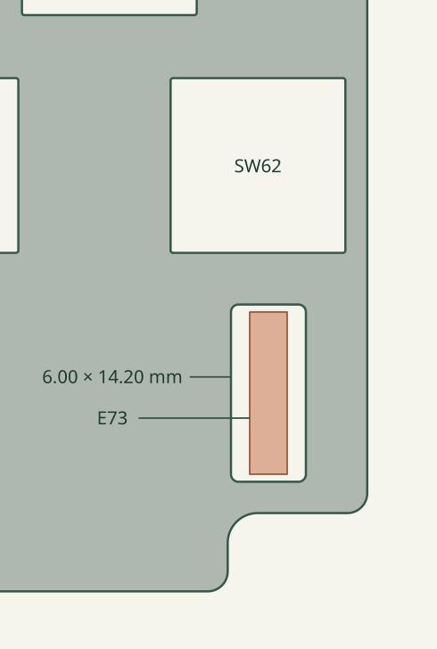

English | 中文
E73 CORNER-07 蓝牙距离和干扰
M05 天线周边
亿佰特的 E73-2G4M08S1C 尺寸图将陶瓷天线画在 13 mm 宽焊盘排的对端，CORNER-07 上该端朝右。厂商要求避开天线附近的金属，手册未给出装机所需的净空数值。本项目用末端 3 × 13 mm 作为暂定筛查区。 亿佰特原厂手册，尺寸图与硬件设计
| 核对项 |
当前结果 |
| 主板天线避让区 |
四层铜均无重叠 |
| 304 不锈钢定位板 |
投影覆盖整个 39 mm² 暂定区域。U1 安装包络到定位板的最短间隙为 1.10 mm |
| M05 右侧外壳 |
从暂定天线带右端向右作九条水平测线，穿过 15.69–19.23 mm 壳体材料后到达外壁。测线位于钢板下方。设计材料为无导电填料的工程树脂 |
| 固件发射配置 |
正常版和校准版均为 0 dBm。所检查的配置摘要与固件构建记录一致 |
CAD 测线给出的是沿线材料厚度。实际衰减还取决于打印材料介电性质、天线匹配和方向性。钢板距离较近，手位、螺钉、桌面和主机也会影响链路。 CAD 测线与计算输入
可选天线开窗定位板试验
试验板增加一个 6.00 × 14.20 mm 的内开窗，内圆角标称 R0.60，沿用 M01 的 304 不锈钢和 1.55–1.60 mm 成品厚度。DXF 回读确认外轮廓、60 个键孔及 28 个安装轴全部保留。开窗与计入位置公差的垫条轮廓至少相隔 5.20 mm。试验 DXF · 几何回读报告

| 几何检查项 |
试验板结果 |
| 钢板覆盖 3 × 13 mm 天线区域的投影 |
从 39 降为 0 mm²。天线相对开窗的 XY 偏移按各轴 ±0.30 mm 筛查后仍无覆盖 |
| 开窗与 SW62 键孔间最窄钢材 |
4.14 mm |
| 开窗与定位板外沿间最窄钢材 |
2.51 mm |
| 开窗与安装底孔间最窄钢材 |
35.26 mm |
默认制作和配套校准固件仍按原 M01。需要进一步排查时，用开窗板对比无线链路。两次使用相同的主板、装配堆叠、外壳、紧固件、供电和主机，在 2 米、3 米下保持位置及朝向一致，记录连接是否稳定、重连情况及可读到的 RSSI。按键手感、板件挠度和完整静电容堆叠另行实测。若正式采用开窗板，要按新定位板指纹重建两份固件并重新校准 60 键。亿佰特的安装说明给出定性的金属避让要求，试验图已核实投影和剩余钢材尺寸，实际距离和刚度由样品确认。亿佰特安装说明
2 米和 3 米的参照值
自由空间损耗为 20 log10(4πdf/c)。距离用米、频率用 Hz，c = 299792458 m/s。示例采用 0 dBm 发射功率、两端天线各 0 dBi，规划时留出 15 dB 衰落余量。Nordic 的典型接收灵敏度为 LE 1M 短包 −95 dBm、LE 2M −92 dBm。示例主机按 −85 dBm 计算，其实际灵敏度和发射功率取决于设备。 国际电联 P.525-5 · 蓝牙低功耗信道 · Nordic 接收规格
| 距离 |
2402–2480 MHz 自由空间损耗 |
E73 接收时允许的附加损耗，1M／2M |
示例主机接收时允许的附加损耗 |
| 2 米 |
46.08–46.36 dB |
33.64／30.64 dB |
23.64 dB |
| 3 米 |
49.60–49.88 dB |
30.12／27.12 dB |
20.12 dB |
右侧两列按频段上端计算并已经扣除 15 dB 规划余量。2 米增至 3 米增加 3.52 dB 的自由空间损耗。合壳后实际还剩多少余量，需要在样机上测量。
首件实测
- 壳外先完成台架供电检查。断开 USB，用电池模拟器供电，确认配对和重连。若已装好并校准感应机构，在预定主机上测试 2 米及 3 米输入，作为壳外对照。
- 装上完整 M05 外壳、钢定位板、计划使用的保护电池和紧固件。断开 USB，在同一主机和桌面上复测，距离从天线端量到主机。每个距离按 0°、90°、180°、270° 四个方向以正常手位输入同一组已知序列，并包含右手靠近天线端的情形。每个距离合计至少记录 100 次预期按下及对应释放。空闲 60 秒观察有无误触，再在 3 米关机、开机并核对重连。
- 接电脑并完成 USB 配置，边充电边用 USB 输入，记录充电电流、漏键、误触和重连。配置后固件优先使用 USB。拔线后用电池复测蓝牙输入，对比壳外记录。保留日常使用的 Wi-Fi 和外设条件。
- 如果壳外通过而关壳失败，先在相同朝向和距离下拆上壳复测。若需要单独比较钢板影响，把主板安全固定后，在拆装钢板前后比较配对、链路和主机可提供的信号强度。主机、距离、几何姿态和无线配置应一致。打字测试需装回已校准的感应机构。
| 装配与供电 |
主机与朝向 |
距离 |
预期及实收按键 |
掉线、重连和空闲事件 |
信号强度（可读时） |
|
|
|
|
|
|
合壳后在所记录的 2 米、3 米条件下，输入应无丢失、重复、误触或掉线。将结果填入首件验收表。